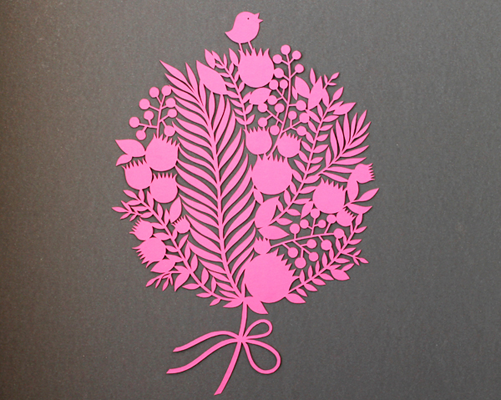

Le papier découpé est une forme d’art dont les artistes utilisent des ciseaux ou des couteaux pour découper une pièce de papier pour former des images. Les mouvements doivent être précis mais la difficulté et simplicité varient. Un simple flocon de neige peut être considéré comme le papier découpé. L’origine de ce style peut dater au 4e siècle en Chine. Ils étaient utilisés comme des décorations religieuses ou comme un pochoir pour la broderie. Ça a commencé par la popularité avec les femmes en haute société mais a éventuellement passé aux autres classes dans la société. Le papier découpé est devenu un art populaire avec des personnes qui les ont mis sur les fenêtres, les meubles et les lanternes en papier. L’expansion de l’art est maintenant trouvé sur des bannières picado au Mexique et dans le kirigami au Japon. Les silhouettes du papier découpé sont mêmes devenues populaires en Angleterre durant le moyen Âge. À présent on crée encore ces projets d’art traditionnellement, souvent durant le nouvel an Chinois.
Une des techniques les plus communes est d’utiliser un couteau. On prend une pièce de papier et on marque un modèle sur le pour nous dire où couper. Le modèle devrait avoir des lignes dedans qui seront le papier qui reste après avoir le couper pour le support. Avec le couteau on trace ce qu’on a marqué en glissant le couteau selon les traces. On peut faire cela en étapes dépendant de la complexité de l’image. C’est important d’avancer avec caution parce qu’on ne veut pas détruire le papier avec le couteau ou nous blesser. Après avoir coupé la place désirée on peut enlever le papier dans l’intérieur avec caution car c’est délicat. Éventuellement, avec de la répétition l’art aura fini.
Aujourd’hui on utilise des différents outils pour créer du papier découpé. Un des plus communs styles du papier découpé aujourd’hui est en forme 2D avec la manipulation d’un multiple de papier. Des différentes couleurs sont coupées pour former une forme désirée. Puis les pièces de papier sont collés ensemble dans une configuration pour représenter une image. Le résultat peut être une forêt avec des arbres en papier ou le coucher du soleil avec plusieurs différentes couleurs. Les possibilités sont infinies.
Avec les pièces d’art en 2D, on peut aussi créer des oeuvres d’art en 3D en combinant le papier découpé avec les sculptures en papier. Par exemple, l’artiste Nahoko Kojima est une artiste Japonaise contemporaine avec le papier découpé. Elle a commencé à étudier le papier découpé à l’âge de cinq ans. Puis en 2004 elle a gradué de Kawasawa Institution avec un degré en désignant. Ensuite en 2007 elle a eu sa première exhibition à Londres avec des oeuvres du papier découpé. En 2009 Nahoko Kojima a commencé à couper professionnellement avec un studio à Londres qui est ouvert en 2010. Certaines de ces oeuvres sont inspirés d’un livre par Lewis Carroll. Pourtant c’était qu’en 2012 qu’elle a commencé des sculptures en papier. Ça l’a pris 5 mois mais elle a créé une image d’un léopard. Cette œuvre a été découpé d’une seule pièce de papier noir mais a été suspendu au plafond pour que ça ressemble 3D. Aujourd’hui elle continue à travailler sur ces projets avec des exhibitions et apparitions autour du monde.
